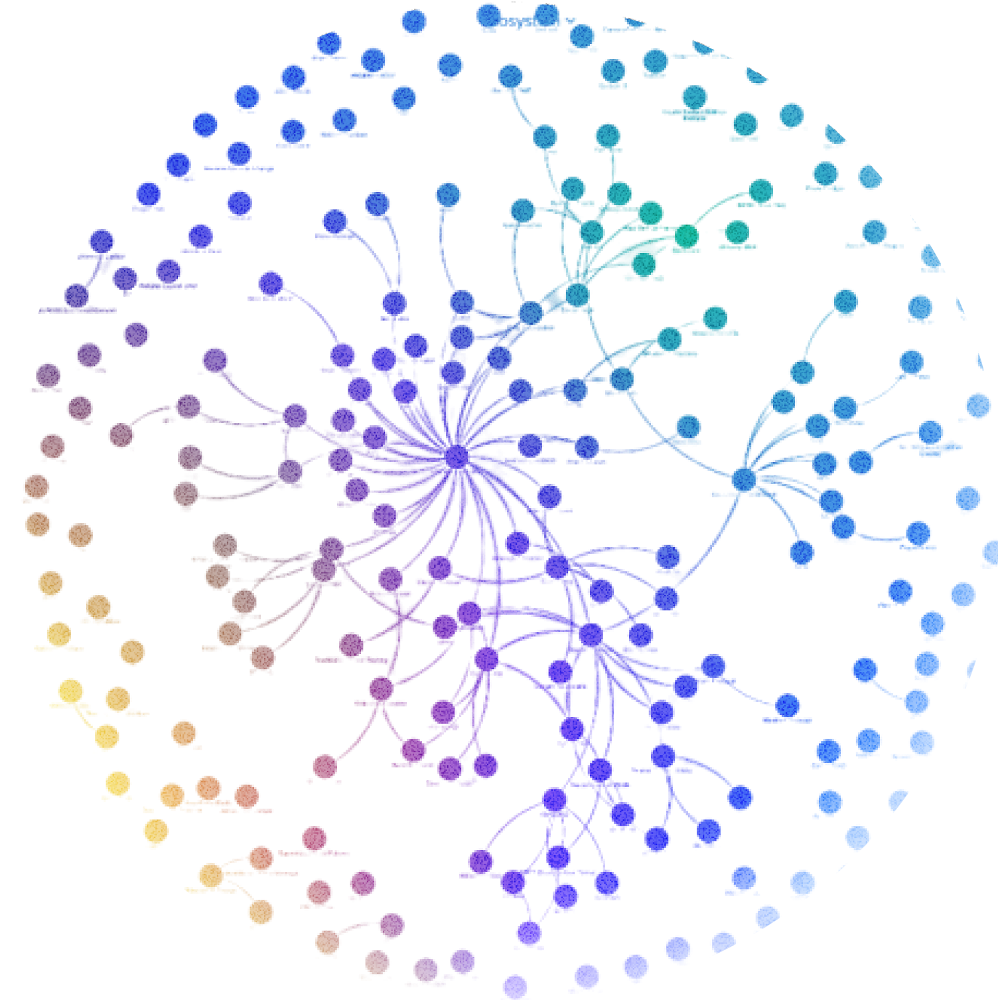
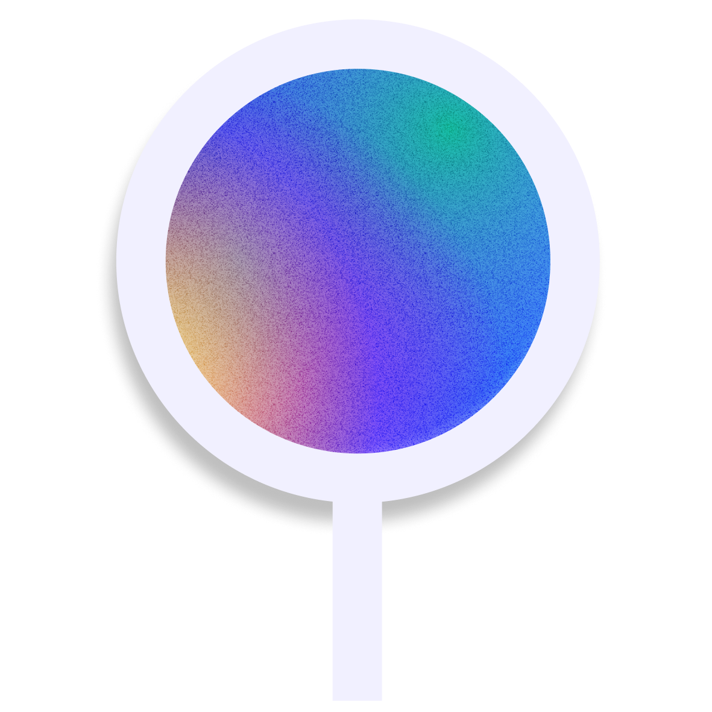
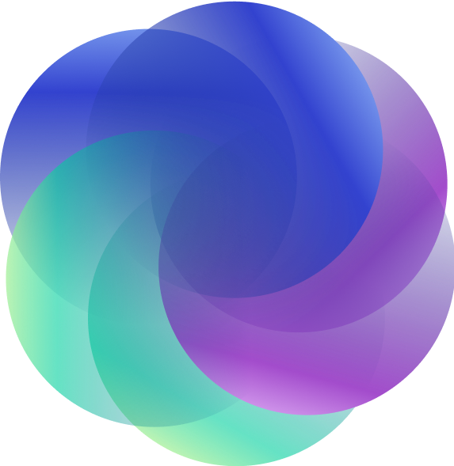

A global network of place-based communities and collaborative initiatives building regenerative economies from the ground up.

Place-based community hubs bringing together organizers, builders, activists, investors, and institutions to collectively shape new models for local regenerative economies.
Explore Local Nodes →
Autonomous working groups and collaborative programs advancing specific missions within the ReFi ecosystem — from education and research to regional coordination.
Explore Initiatives →Ready to get involved? Start a Local Node, launch an initiative, or become a member of the network.